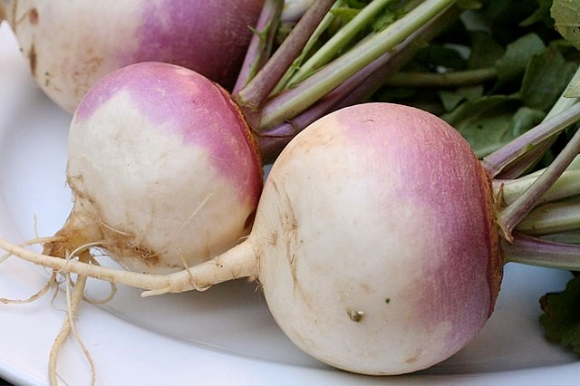
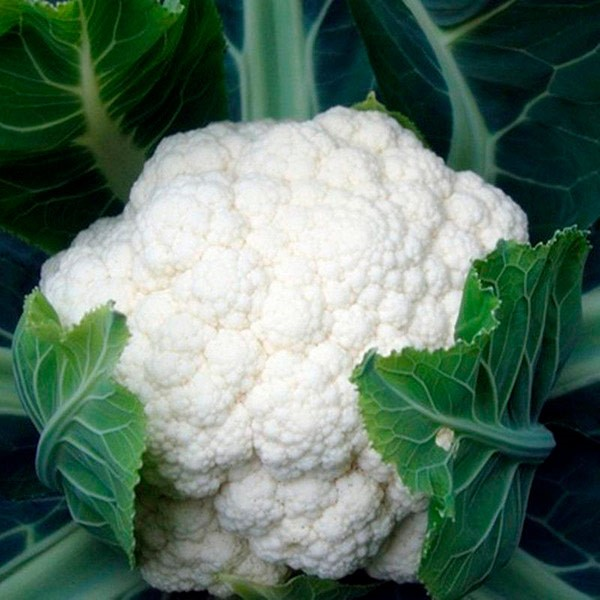
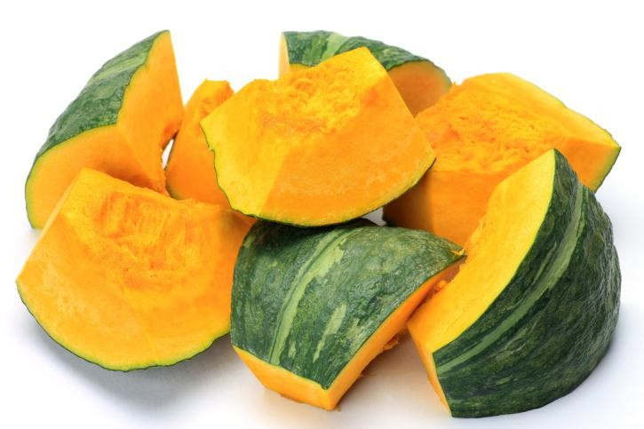

Zanahoria

La zanahoria también tiene beneficios que pueden ayudar a reducir el estrés, gracias a sus nutrientes esenciales y propiedades.
Fuente de potasio: El potasio es un mineral que ayuda a regular la presión arterial, la cual puede aumentar en momentos de estrés.
Propiedades antiinflamatorias: Las zanahorias tienen compuestos con propiedades antiinflamatorias, que ayudan a reducir la inflamación en el cuerpo, una condición que el estrés crónico tiende a agravar.
Nabo

El nabo es un vegetal menos común en la dieta diaria, pero tiene varios beneficios que pueden contribuir a la reducción del estrés y a la salud en general.
Rico en antioxidantes: El nabo contiene vitamina C y otros antioxidantes que ayudan a combatir el daño celular provocado por el estrés oxidativo.
Apoyo a la salud ósea: Los nabos contienen minerales como calcio y magnesio que ayudan a mantener los huesos fuertes y a reducir los efectos físicos del estrés en el cuerpo.
Fuente de potasio: El potasio en los nabos ayuda a controlar la presión arterial y a relajar los músculos, contribuyendo a reducir la tensión y a mejorar el equilibrio físico y mental.
Brócoli

El brócoli es un alimento rico en nutrientes que puede tener efectos positivos en la reducción del estrés.
Apoya el sistema nervioso
Rico en folato: El folato es una vitamina B que se asocia con una mejor salud mental.
Ayuda a mejorar el sueño: El brócoli contiene nutrientes que favorecen el buen descanso
Incluir brócoli en la dieta puede ser una buena estrategia para complementar otras prácticas de manejo del estrés, como la actividad física y la meditación.
Espinaca

La espinaca es otra excelente opción alimenticia que puede ayudar a reducir el estrés, gracias a su perfil nutricional.
Favorece la salud del cerebro: La espinaca contiene antioxidantes como el ácido alfa-lipoico, que protege las células del cerebro del daño oxidativo, promoviendo la claridad mental y reduciendo la fatiga mental causada por el estrés.
Apoya el sistema inmunológico: La espinaca también contiene vitamina C y otros antioxidantes que fortalecen el sistema inmunológico, lo cual es importante para mantener el cuerpo en equilibrio y mejor preparado para manejar situaciones de estrés.
Coliflor

Incluir coliflor en la dieta, ya sea al vapor, asada, en sopas o como parte de ensaladas, puede ser una manera deliciosa de ayudar a manejar el estrés y mejorar la salud en general.
Bajo en calorías y alto en nutrientes: La coliflor es baja en calorías, lo que la convierte en un excelente complemento para una dieta saludable sin aumentar la ingesta calórica. Esto puede ayudar a mantener un peso saludable, lo cual a su vez puede reducir el estrés asociado con problemas de peso.
Rica en fibra: Este vegetal es una buena fuente de fibra, lo que ayuda a regular la digestión y estabilizar los niveles de azúcar en la sangre.
Zapallo

Incorporar zapallo en la dieta es sencillo y delicioso, ya que puede utilizarse en sopas, guisos, purés, ensaladas o incluso como ingrediente en postres saludables, lo que lo convierte en un excelente aliado para mejorar el bienestar emocional y físico.
Contiene triptófano: El zapallo contiene triptófano, un aminoácido que es precursor de la serotonina. Esto significa que puede ayudar a mejorar el estado de ánimo y a reducir la ansiedad, favoreciendo una sensación de bienestar.
Rico en potasio: El potasio es esencial para la función muscular y la regulación de la presión arterial.